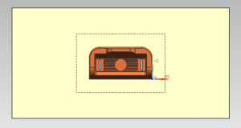
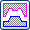
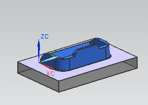

将自动把分型片体与区域以及补片片体缝合到一起，以修剪型芯和型腔镶块。
点击模具分型工具工具条上的设计分型面 。
在设计分型面对话框的自动创建分型面组中，点击自动创建分型面 ，然后点击确定。
注塑模向导将选择合适的方法来进行分型(在这个练习中，使用的是有界平面)，并自动生成曲面以及合适的分型回路。

在分型导航器中，选中下列复选框并清除其余复选框：
工件线框
分型线
分型面
曲面补片
型腔
点击模具分型工具工具条上的定义型腔和型芯 。
在定义型腔与型芯对话框的选择片体组中，在区域名称列中选择型腔区域。
点击应用。
分型面的副本、两个曲面补片、以及抽取的区域片体将被缝合到一起，并用于修剪现有的 WAVE 链接的镶块。
将显示型腔部件文件以便您可以检测型腔体，并可选择地更改修剪方向。
旋转显示以查看型腔。
在查看分型结果对话框中，点击确定。
在定义型腔和型芯对话框中，选择型芯区域。
点击应用。

在查看分型结果对话框中，点击确定。
镶块适用于使用 NX CAM 操作中的工装开发。
在定义型腔和型芯对话框中，选择取消。
在装配导航器中，右击 cardholder_parting_018 节点并选择显示父项→cardholder_top_003。
(您看到的数字后缀可能会不同。)
双击 cardholder_top 以将它设为工作部件。
选择文件→全部保存。